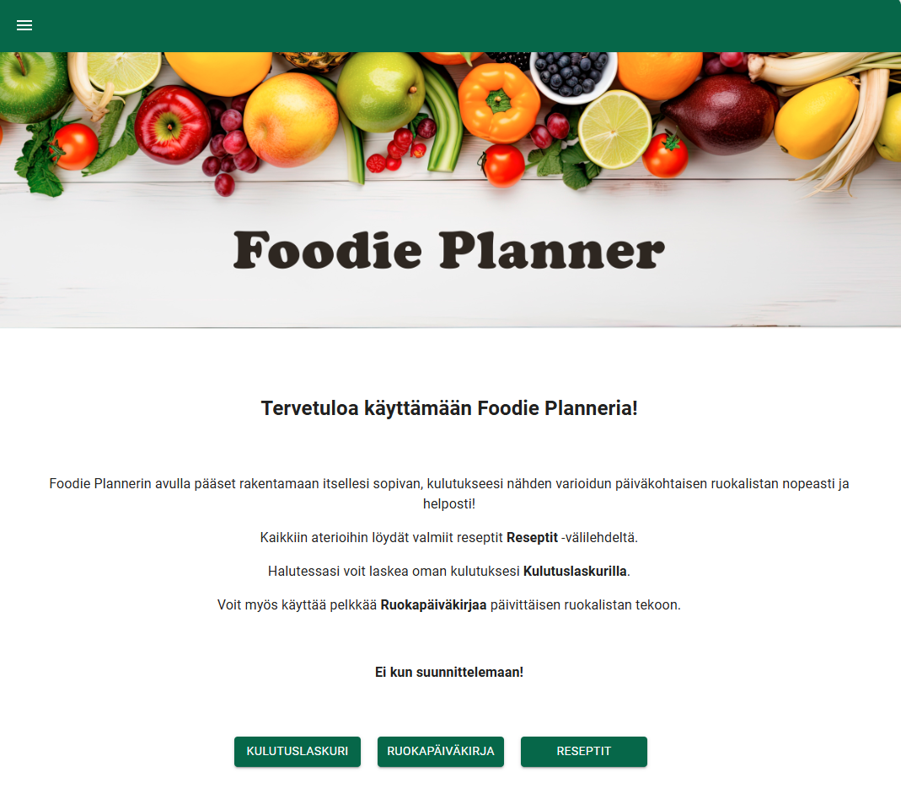

Henkilökohtainen kaloriseurantasovellus
Foodie Planner on sovellusohjelmoinnin kurssilla toteutettu soveltava harjoitustyö, jonka tavoitteena oli osoittaa osaamista kurssin keskeisistä aiheista. Projektissa arvioitiin aiheen valintaa, teknistä toteutusta ja sovelluksen julkaisemista.
Sovelluksen tarkoituksena on auttaa käyttäjää seuraamaan päivittäistä energiankulutusta ja vertaamaan sitä syötyihin aterioihin. Käyttäjä voi laskea kokonaiskulutuksen ja koota ruokapäiväkirjaa valmiista aterioista.
Keskeiset ominaisuudet:
Käytetyt teknologiat:
React (TypeScript), Material UI, localStorage
Sovellus on julkaistu GitHub Pages -palvelussa. Pääset kokeilemaan sitä tästä linkistä.
Opettajan palaute